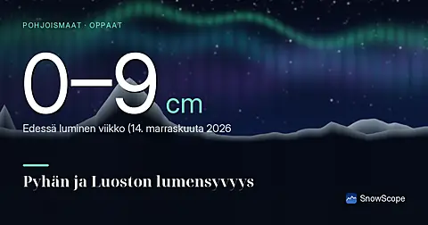

Lumiraportit · Hiihto
Päivittäiset lumiraportit laskijoille: missä lunta on, mitä on tulossa ja missä kannattaa laskea, SnowScopen lumikartasta ja mittausasemilta. Jokainen luku tulee päivän tiedoista.

Himoksen lumi marraskuun puolivälissä 2026: Jämsän ympäristön sääasemilla mitattiin 13. marraskuuta 0–2 cm; ensilumen latu avautuu 14. marraskuuta, rinteiden avauspäivä ei ole vielä tiedossa. Sateen riski ja 46 mennyttä talvea.

Vuokatin lumitilanne marraskuun puolivälissä 2026: Sotkamon asemilla mitattiin 13. marraskuuta 0 cm, Kajaanissa 1 cm; tälle viikolle ennustetaan noin 9 cm, osin vetenä; rinteet aiotaan avata 4. joulukuuta. 46 mennyttä talvea.

Tahkon lumensyvyys marraskuun puolivälissä 2026: rinnekausi avattiin 13. marraskuuta tykkilumella, 14 hissistä 2 käynnissä; lähiasemilla mitattiin 0 cm, kun lyhytaikainen 2–4 cm:n lumipeite suli. Tuleva viikko ja 46 mennyttä talvea.

Saariselän lumiraportti marraskuun puolivälissä 2026: Saariselän sääasema mittasi 13. marraskuuta 4 cm, sama koko viikon; seitsemälle päivälle ennustetaan noin 22 cm ilman sadetta; rinteet aiotaan avata 21. marraskuuta.

Pyhä-Luoston lumensyvyys marraskuun puolivälissä 2026: tuntureiden ympäristön sääasemilla mitattiin 13. marraskuuta 0–9 cm, alle normaalin; tälle viikolle ennustetaan noin 23 cm ilman sadetta. Avaussuunnitelmat ja 46 mennyttä talvea.

Ylläksen lumitilanne marraskuun puolivälissä 2026: Ylläksen ympäristön sääasemilla mitattiin 13. marraskuuta 0–2 cm, selvästi alle normaalin; tälle viikolle ennustetaan noin 23 cm lunta ilman sadetta, ja rinteet aiotaan avata 21. marraskuuta.